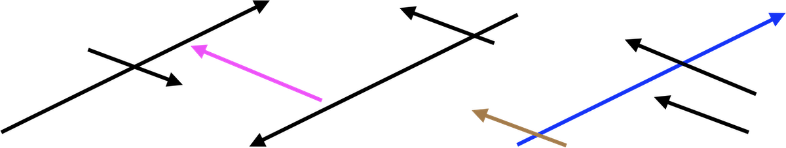
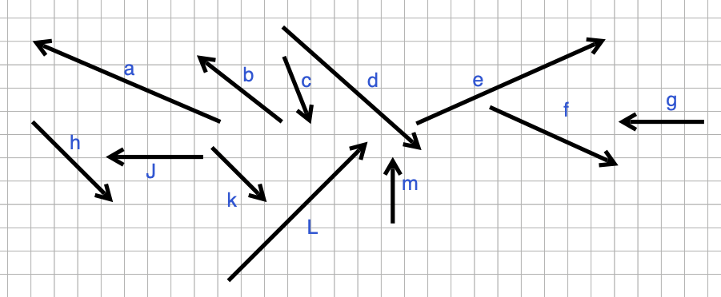
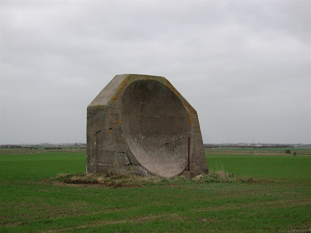
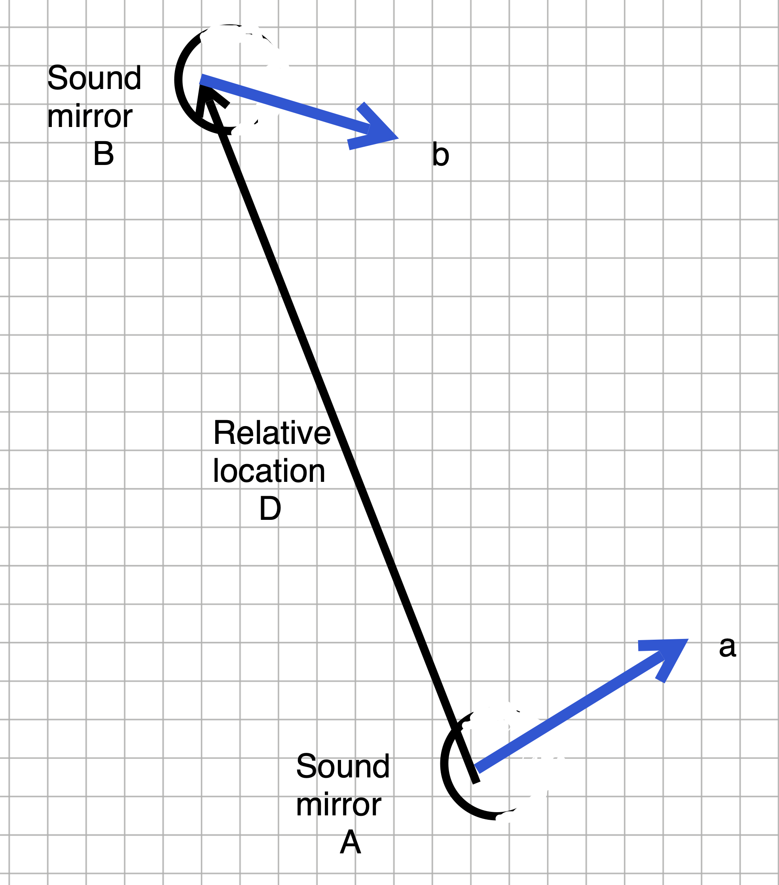

MOSAIC Assignment Week 11
linear algebra
Submitting your answers
If the answers that have been loaded automatically are not yours, press this button before starting your work:
At any point, you can submit your answers by collecting them and uploading them to the class site.
No answers yet collected
Part 1: By hand and eye
Exercise 1 Consider this set of vectors

- Find the lengths of each of these vectors. Assume that the vectors begin and end exactly on the graph-paper intersections.
Which one of these is not a length of the vectors in Figure 1?
gsc-1
- Two pairs of vectors in Figure 1 are orthogonal within each pair. Which one of these is not one of those pairs?
gsc-2
- Just using your eye, say whether the dot product between every pair of vectors is positive, zero, or negative.
- A & B gsc-c1
- A & C gsc-c2
- A & D gsc-c3
- A & E gsc-c4
- B & C gsc-c5
- B & D gsc-c6
- B & E gsc-c7
- C & D gsc-c8
- C & E gsc-c9
- D & E gsc-c10
Exercise 2 Here are several vectors:

- Remembering that mathematical vectors have only two properties—length and direction—how many mathematically different vectors are being shown.
Answer
Five. Color is not a property of a mathematical vector. Orientation, however, is.
Measure the length of each vector. (Hint: Use a ruler! You can round to the nearest millimeter.)
Find the included angle between the \(\color{blue}{\text{blue}}\) and \(\color{brown}{\text{brown}}\) vectors. (Your answer should be correct to within \(\pm 15^\circ\).)
Answer
About 135 degrees. Note that the orientation makes a difference. The angle is measured with the vectors placed tail to tail.
- Find the included angle between the \(\color{magenta}{\text{magenta}}\) and \(\color{blue}{\text{blue}}\) vectors.
Answer
Magenta points in the same direction as brown, so the answer is the same as in the previous question.
- Find the included angle between 0.7 times the \(\color{blue}{\text{blue}}\) vector and -11.3 times the \(\color{brown}{\text{brown}}\).
Answer
The scaling does not matter except that the negative sign for the brown vector means that its orientation will be reversed. This means that the included angle will be 45 degrees, not 135 degrees as in the previous two questions.
Exercise 3 Collision course?
Consider the diagram showing two straight-line tracks, a dot on each track, and a vector.

Let’s imagine that dot 1 is an aircraft and that the black vector attached to it is the aircraft’s velocity. We will call this \(\vec{v}_1\), Similarly for dot 2, where the velocity vector will be called \(\vec{v}_2\).
There is a third vector drawn in red: the difference in position of the two aircraft at the exact moment depicted in the drawing.
The question we want to address is whether the aircraft are on a collision course. Obviously, the two courses cross. So we know that the two aircraft will cross the same point. For a collision, the aircraft have to cross that point at the same time.
Copy over the drawing to your own piece of paper. You don’t need to get the vectors and positions exactly right; any reasonable approximation will do.
Now you will do visual vector addition and subtraction to answer the collision question.
The relative velocity of the two planes is the difference between their velocities. Subtract \(\vec{v}_2\) from \(\vec{v}_1\) and draw the resulting vector. Pay attention to both the length and direction of the relative velocity.
The displacement between the two planes is the red vector: the position of dot 2 subtracted from dot 1. Compare the directions of the relative velocity vector and the displacement vector. If they are aligned, then the planes are on a collision course.
In the picture as drawn, the relative velocity vector and the displacement vector are not aligned. Figure out how much you would need to change the length of \(\vec{v}_2\) so that the relative velocity does align with the displacement. (Keep the direction the same.) Draw this new vector and label it “vector for intercept.”
In (3) you changed the length of \(\vec{v}_2\) keeping the direction the same. Now you will keep \(\vec{v}_2\) at the original length, but change its direction so that the new relative velocity is aligned with the displacement vector.
Items (3) and (4) are two different ways of designing an intercept of plane 1 by plane 2.
Bonus) You can figure out how long it takes for each plane to reach the intersection point by finding out how many multiples of the velocity vector will cover the line segment between the plane’s position and the intersection point. For example, in the original drawing \(4 \vec{v}_1\) will bring the plane to the intersection point, so it takes 4 “time units” for the plane to reach the point. (What is the time unit? If velocity is in miles/hour, then the time unit is hours. If the velocity is in feet/second, then the time unit is seconds.) Your task: Figure out where aircraft 2 will be in 4 time units. This will tell you the separation between aircraft 2 and aircraft 1 when 1 reaches the intersection point. Draw and label this vector.
Exercise 4 Here are 12 vectors, labeled “a” through “m.” (Letter “i” has been left out.) There are several quick questions, each of which makes a claim about whether the sum of two vectors equals a third. Answer true or false to the claim. There are no tricks about exactitude, so if the claim is close to being true, answer true.

- \(\vec{a} + \vec{b} = \vec{L}\) tsp-1
- \(\vec{b} + \vec{J} = \vec{a}\) tsp-2
- \(\vec{b} + \vec{m} = \vec{J}\) tsp-3
- \(\vec{c} + \vec{f} = \vec{d}\) tsp-4
- \(\vec{k} + \vec{L} = \vec{e}\) tsp-5
- \(\vec{e} + \vec{b} = \vec{m}\) tsp-6
- \(\vec{m} + \vec{g} = \vec{b}\) tsp-7
Exercise 5 Locating WW I aircraft
The photograph shows part of an aircraft detection system from World War I. The concrete block is an “acoustic mirror.” Its purpose is to collect and reflect sound from an aircraft, concentrating them at a point where they can be picked up by a microphone. Moving the microphone to a point where the concentrated sound is strongest allows the aircraft’s bearing to be identified, helping observers acquire the aircraft visually.

Jan2007.jpg){kind=link}
Figure 3 shows an imagined situation where two bearing vectors have been identified for an aircraft.

Give the position of the aircraft as a multiple of \(\vec{a}\) from sound mirror A and as a multiple of \(\vec{b}\) from sound mirror B. (Choose the closest answer)
g4ZZQz
Exercise 6 Define the vector \[\vec{v} \equiv \left[\begin{array}{r}4\\1\\3\\-2\end{array}\right]\ .\]
Your task is to construct different vectors that are orthogonal to \(\vec{v}\). You can use the trick presented in ?@sec-orthogonality of creating templates with zero in all but two of the positions, e.g. \[\left[\begin{array}{r}0\\0\\\_\\\_\end{array}\right] \ \ \text{or}\ \ \ \left[\begin{array}{r}0\\\_\\0\\\_\end{array}\right] \ \ \text{and}\ \ \ \left[\begin{array}{r}\_\\\_\\0\\0\end{array}\right]\] To construct a vector orthogonal to \(\vec{v}\), fill in the blanks by taking the corresponding elements of \(\vec{v}\), swapping them, and negating one of them. For example, taking the first template will produce
\[\left[\begin{array}{c}0\\0\\\underline{\ 2\ }\\\underline{\ 3\ }\end{array}\right]\ .\]
Fill in the blanks of the other two tempates to create vectors orthogonal to \(\vec{v}\).
Construct 3 new vectors by taking different linear combinations of the vectors you created in (A). Are any of these new vectors orthogonal to \(\vec{v}\)? Show your work.
Prove algebraically that any linear combination of a set of vectors orthogonal to \(\vec{x}\) will itself be orthogonal to \(\vec{x}\).
Part2: Computing
Basic operations
- Use
vec()to create a vector from individual components (scalars). Example:
- Use
rvec()to create a random vector of the specified dimension.
- Use the
%dot%operator to calculate the dot product.
Exercise 7 Write three test cases for %dot% using vectors for which you can easily find the value by eye.
Write these functions and tests
Exercise 8 Use %dot%, sqrt(), and / to calculate the length of a vector
Solution
veclen <- function(v) sqrt(v %dot% v)Exercise 9 Write three tests for length() on vectors where you already know the answer.
Exercise 10 Write a function, unitvec() that takes a vector as an input and returns the same vector but with unit magnitude.
Tip
unitvec <- function(vec) {
vec/veclen(vec)
}Here’s a test that I invented. See if it works in any dimension 2 or greater$
Explain the result of my test.
Exercise 11 Use %dot%, sqrt(), *, and / to calculated the cosine of the angle between two vectors.
Solution
cang <- function(v, w) {
(v %dot% w) / (veclen(v) * veclen(w))
}Write these tests for cang() for cases where you already know the answer:
Exercise 12 Application. The correlation coefficient is a dot product. I’ll write the function for you so that you can use the tilde notation from QR2.
Test this out on any data frame and pair of variables you like.
Explain whether the results correspond or not.
Orthogonality
Exercise 13 Create vectors that are orthogonal to each of these and confirm your answer using cang()
Exercise 14 Here’s a function (written in jibberish that you won’t yet understand) but which will construct a vector orthogonal to any vector or set of vectors.
Write some tests on vectors you create of various dimensions and find out whether dtk_ortho() works or not.
Write the test code in the above chunk and explain what you found here.